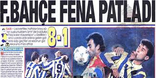

FENERBAHÇE
FENERBAHÇEİlk futbol oyununun, bugünkü anlamıyla ilk kez 1823 yılında
İngiltere’de oynanmaya başlamasının üzerinden neredeyse yıllar ve yıllar geçmişti.
Nihayet tarihler 1890’lı yıllara ulaştığında, Moda’da oturan İngiliz’ler de bu keyifli spordan
iyice etkilenmiş ve o yemyeşil arsaların bulunduğu Kadıköy’ün geniş alanlarında,
futbolu oynamaya başlamışlardı.
Seyri çok keyifli bu oyunun, çevredeki Türk
gençlerinde de ilgi uyandıracağı ve de bu sporu onlara sevdireceği pek tabii idi ve hatta da kaçınılmazdı.
Ama ne var ki, o sıralarda süren monarşi rejimi nedeniyle Müslüman Türkler için cemiyet kurmanın ve hatta
mevcut cemiyetlere dahi üye olmanın yasak olmasından dolayı, Kadıköy Çayırlarında top koşturan
İngiliz gençlere yine ancak Rum gençleri eşlik edebilmekteydi. Yine de, hemen her akşamüstü bilhassa Kuşdili

Çayırında yapılan bu futbol maçları ya da antrenmanları,
Kadıköy halkının büyük bir kesiminin ilgisini çekmekte,
genellikle akşamüstleri zevk için de olsa oynanan bu futbol oyunu için,
Kalamış’tan, Moda’dan, Kuyubaşı’ndan,
ve hatta Haydarpaşa civarlarından gelecek öbek öbek halkı,
gününe ve hava durumuna göre küçük ya da büyük kümeler halinde bu oyunu seyretmeye yöneltmekteydi.
GALATASARAY
Galatasaray Spor Kulübü, Türk Spor Tarihi'ndeki öncü olma özelliğini hiç
kuşkusuz içinden doğduğu ve gene öncü bir kurum olan
Galatasaray Lisesi'nden (Mektebi Sultani) almıştır.
Okul ile kulüp arasındaki koparılmaz bağ, yadsınamayacak bir gerçeklik ve övünç kaynağıdır.
Devlet adamı yetiştirmek amacıyla II. Beyazıt tarafından 1481'de kurulan mektep,
adını kurulduğu bölgeden alır ve "Galata Sarayı" olarak anılmaya başlar.
Okul modern konumuna 1 Eylül 1868'de Sultan Abdülaziz döneminde kavuşur.
Okul' un yeniden yapılanmasıyla birlikte,
Türkiye'de de gerçek anlamıyla ilk sportif çalışmalar başlamış olur ve
okulda Beden Eğitimi dersi jimnastikçi 'Monsieur Curel' tarafından eğitim programına konur.
Bu atılımlar gerçekten bir devrim niteliği taşımaktadırlar. Curel, modern aletler eşliğinde
çalıştırdığı öğrencileri sportif açıdan geliştirirken,
onlar için Kağıthane'de bir idman Bayramı düzenler. Yıl 1870'tir.
Bu etkinlikte başarı gösteren sporcular değişik ödül ve madalyalar
kazanır ve yarışmaların sonunda öğrencilere "kuzulu pilav" verilir.
Bu da, sonraki yıllarda bir başka geleneğin başlangıcını oluşturur.
Curel'den sonra görevi devralan yabancı spor hocaları
(M. Moiroux, Signor Martinetti, Stangali gibi), jimnastik ve atletizmin yanı sıra,
değişik branşlara da eğilerek (yüzme, kürek, aletli jimnastik), bir ilki daha başlatmış olurlar.
Bu çalışmaların ürünü çok geçmeden alınmaya başlanır ve adı Türk Spor Tarihi'ne altın
harflerle yazılan Faik Üstünidman'ın yanı sıra, Binbaşı Mazhar Kazancı,
Abdurrahman ve Ahmet Robenson kardeşler GSL'nde görev alıp, izcilik, tenis, hokey
gibi spor dallarının öğrenciler arasında yaygınlaşmasını sağlarlar.
Özellikle Üstünidman'ın ön ayak olmasıyla, öğrenciler futbolla tanışırlar.